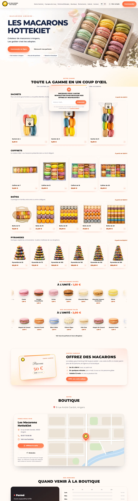

Les Macarons Hottekiet
Stagiaire, développeur web full-stack, puis stagiaire en sécurité
Contexte
Les Macarons Hottekiet est un créateur de macarons à Angers, avec plus de cinquante parfums. L'entreprise voulait un site pour présenter sa gamme et prendre des commandes en ligne, à retirer ensuite en boutique. J'ai créé ce site en 2024, puis j'y suis revenu en 2026 pour un second stage, consacré à sa sécurité et à sa refonte.
Ma démarche
-
1
Observer Stage sur place · janv. – févr. 2024
Avant de coder quoi que ce soit, j'ai passé deux mois dans l'entreprise. J'ai découvert comment se passent la fabrication et la vente des macarons, j'ai aidé à la gestion des stocks et à l'administratif, et j'ai participé au salon gastronomique de Biarritz. L'idée était de bien comprendre leurs besoins avant de concevoir le site.
-
2
Concevoir et développer CDD à distance · févr. – oct. 2024
- Un tunnel de commande Click & Collect fait sur mesure, avec un calendrier pour choisir son créneau de retrait
- Un back-office pour suivre les ventes et gérer les produits, les stocks, les horaires, les codes promo et les événements
- Un espace client sécurisé et un espace administrateur
- Les factures, les tickets de paiement Stripe et les e-mails de confirmation, générés automatiquement
- Un chatbot d'assistance, une version multilingue, une newsletter et un travail sur le référencement
-
3
Déployer et sécuriser CDD · 2024
- Mise en ligne du site et administration du serveur sous Linux
- Une API REST qui fait le lien entre le front-end et le back-end (Node.js, MySQL)
- Une connexion sécurisée avec JWT, des cookies HttpOnly / Secure et HTTPS
- La mise en conformité RGPD et la gestion du consentement aux cookies
-
4
Renforcer la sécurité et refondre le site Stage · juil. – août 2026
Deux ans plus tard, je suis revenu dans l'entreprise pour un stage de deux mois. Cette fois, l'objectif était de sécuriser encore plus le site et de lui donner un nouveau visage.
- Durcissement du serveur : pare-feu avec seulement les ports utiles, connexion par clé uniquement, blocage automatique des adresses qui attaquent (CrowdSec)
- Programmes isolés sous un compte sans droits d'administration
- Double authentification obligatoire sur l'espace de gestion, sessions révocables et journal des connexions
- Sauvegarde automatique de la base chaque nuit, avec un test de restauration chaque semaine
- Surveillance du site et alertes en cas d'incident, sans aucune donnée personnelle dans les messages
- Refonte du design de toutes les pages publiques
Résultat
Le site est toujours en ligne et continue d'évoluer. Voici ses scores PageSpeed Insights sur mobile (novembre 2026) :
- 93 Performance page d'accueil
- 97 Accessibilité
- 100 Référencement SEO
Compétences développées
Techniques · métier
- Développement full-stack
- HTML · CSS · JavaScript
- Node.js
- Conception de base MySQL
- Paiement Stripe
- Administration Linux
- Sécurité web (JWT, HTTPS)
- Durcissement de serveur
- Double authentification
- Sauvegardes et supervision
- SEO
Transversales
- Analyse du besoin sur le terrain
- Gestion de projet de A à Z
- Autonomie à distance
- Échanges avec un client non technicien
- Reprendre et améliorer un projet existant
- Conformité RGPD
Ce que j'en retiens
Le stage d'observation m'a énormément servi. En voyant de près comment l'entreprise fabrique, vend et gère son stock, j'ai pu construire un outil adapté à son métier, avec les créneaux de retrait et le stock par parfum, au lieu d'un site générique.
C'était aussi la première fois que je menais un projet seul du début à la fin. J'ai appris à découper un gros besoin en petites étapes, à faire des choix techniques et à les assumer une fois le site en production. Comme le site gère des paiements et des données clients, j'ai aussi dû prendre la sécurité au sérieux.
Revenir sur ce site deux ans plus tard a été très formateur. J'ai relu mon propre code avec un œil plus critique, et je suis passé d'un site qui fonctionne à un site vraiment protégé : serveur durci, accès limités, sauvegardes testées, surveillance. C'est ma première expérience concrète de sécurisation d'un système en production, et elle a confirmé mon envie de travailler dans la cybersécurité.